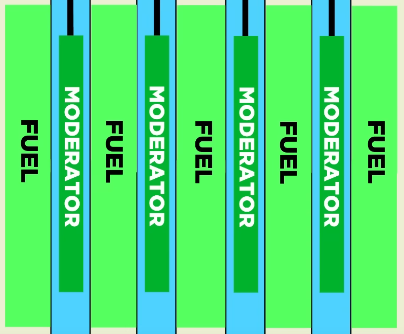

(or, a guide to nuclear physics)
Welcome to my first ever blog post! In this post, I'll be covering the technical aspects of what happened at the Chernobyl Nuclear Power Plant reactor number 4 in 1986 from a physics perspective, and clear up some common misconceptions while I'm at it.
First, to properly understand what happened at Chernobyl, one needs to have an understanding of the nuclear physics at work in a nuclear reactor's core. This, in turn, requires a basic understanding of atomic nuclei. Atomic nuclei are made of two kinds of particles that really like clumping together: protons and neutrons, which are together called "nucleons". Each nucleus can be defined by the number of protons and neutrons in it. The number of protons determines the chemical properties of the atom, and chemists call different proton numbers "elements". Atoms with one proton are considered to be Hydrogen, atoms with two are considered to be Helium, three makes Lithium, and so on throughout the whole periodic table. A related property, the atomic number, is in fact simply the number of protons present in the nucleus. However, protons alone can't form a nucleus (although a lone proton is still considered a nucleus, for 99.98% of natural hydrogen atoms have nuclei consisting of a lone proton). Due to quantum mechanics, particles of the same type dislike being too close to each other, and the binding properties of nucleons only kick in at extremely short range. Unfortunately, these two effects nearly exactly match in strength, with the quantum repulsion (Pauli Exclusion Principle is the term) slightly winning out. However, by doubling up with each other, protons and neutrons can together form a nucleus with many nucleons, since now the repulsive effect is only half as strong since there are now two types of particles involved. Notably, if one type of nucleon sufficiently outnumbers the other, the excess nucleons will slowly transform into the other type in a process called beta decay, which is a type of radioactive decay. This happens because the Pauli repulsion is minimized when both nucleons are present in equal quantities. For heavier elements, neutrons will start considerably outnumbering the protons because the electrostatic repulsion between all the positively charged protons reduces the favorability of a given nucleon being a proton, and tilts the equilibrium towards a nucleus with more neutrons, since neutrons are neutral and are not affected by electrostatic charges.
Interestingly, protons and neutrons have essentially identical mass. Therefore, the mass of a nucleus can be found by simply counting how many nucleons there are. Physicists usually refer to nuclei by writing the atomic symbol (an abbreviated form of the element's name, sometimes the Latin name) followed by the atomic mass with a hyphen. For example, carbon atoms always have 6 protons and, 98.9% of the time, 6 neutrons. This version of carbon is called C-12, which is pronounced "carbon twelve". Different versions of the same element, which necessarily differ in the number of neutrons, are called isotopes of that element. So, C-12 is one isotope of carbon, and C-13 is another (with 7 neutrons), and C-14 (with 8 neutrons) is what's used in radiocarbon dating since it has a half-life of 5,700 years (after which it beta decays to N-14, the most common isotope of nitrogen), making it valuable for finding the age of organic matter between about 500 and 50,000 years old. However, the various isotopes of carbon are not particularly relevant to nuclear reactors. What are highly relevant are the isotopes of uranium.
There are two naturally occurring isotopes of uranium: U-235 and U-238 (well, there's also U-234, but it occurs in negligible quantity, having a natural concentration of 0.005%). Natural uranium consists of 99.28% U-238, with the remaining 0.72% being U-235. When U-235 is struck by a neutron, it absorbs it, and 85.4% of the time it fissions, splitting into two unevenly sized nuclei of random size (assuming a sufficiently slow neutron; very fast ones increase this probability). In the process, a small number of neutrons are released, averaging to 2.42 neutrons per fission event. These neutrons are released with extreme velocity, averaging 6% of the speed of light, and aptly termed "fast neutrons". This process of absorbing a neutron causing a fission event (releasing energy) and releasing two or three more naturally seems to imply the possibility of a neutron chain reaction, promising an immense release of energy. However, it's not quite that simple. You see, only U-235 has these favorable properties, and the dramatically more abundant U-238 finds itself relatively inert, simply capturing neutrons without fissioning. A fast enough neutron can split U-238, but the probability of this is simply quite too small to sustain a chain reaction. Instead, we need some way to selectively target U-235. One way is to simply remove the U-238, thereby concentrating the U-235, a process called enrichment, but that is a very difficult process since different isotopes of the same element have identical properties, the only exploitable difference being the very slight difference in mass. Now, if a large enough quantity of relatively pure U-235 is amassed, it is in fact quite trivial to cause a chain reaction, and indeed the citizens of Hiroshima were the first to witness what that looks like (although that was specifically designed to optimize for the destructive effect). However, while spending immense amounts of energy to gradually separate out small quantities of relatively pure U-235 to amass and then send to your enemies is all well and good, when it comes to power generation, it's simply too impractical to enrich uranium any more than absolutely necessary, not to mention concerns that highly enriched material may be used to construct a bomb should the government ever decide that to be a good idea. Thus, we need another way.
As it turns out, neutrons don't have to travel at 6% of the speed of light. Quite fortunately, U-235 attracts neutrons in an almost magnetic manner, a property that U-238 does not possess. This property is actually largely responsible for the ease with which U-235 fissions, as even an extremely sluggish neutron will be pulled in with much vigor and violently smash against the uranium nucleus, much like magnets like to snap to metal. However, this necessitates that the neutrons travel slowly enough to be caught by this attractive force, as otherwise they just whiz right by. The slower the neutron can be made to go, the further the neutron can travel from a U-235 atom and still find itself pulled in. If the speed of the neutron can be brought down to room temperature (equating temperature and speed is a bit of an odd one, but such is the nature of sufficiently light particles) then the attractive field of a U-235 atom works so well that even with 99.28% of the material being inactive U-238, a chain reaction can still be sustained quite successfully. The next question is obviously how to slow a neutron down. As it turns out, for most nuclei, the most common interaction between itself and a neutron is for the neutron to simply bounce off, exchanging a portion of its energy with the atom in question, slowing the neutron down. However, due to the nature of elastic collisions, the more similar the mass of the nucleus is to the neutron, the more effective the energy transfer is, which is unfortunate because most nuclei are a lot heavier than a single neutron. Thus, the lighter the nucleus, the better it is at slowing down neutrons.
The process of slowing down neutrons is called "moderation" and the materials employed to do so are called "moderators". The moderator that is best at slowing down neutrons with the fewest collisions is the lightest nucleus, and the only one that exactly matches the mass of a neutron: plain old hydrogen. However, it is rather difficult to compress large quantities of hydrogen into a small volume, not to mention all the other, more practical, concerns, so an alternative must be found. Fortunately, two thirds of the atoms in regular water just so happen to be hydrogen, and water is quite dense all on its own (at least compared to hydrogen gas), so water makes a very good moderator. Still, it is far from the best, since ordinary hydrogen has an unfortunate tendency to sometimes capture neutrons that hit it, so a chain reaction cannot be sustained with natural uranium and ordinary water alone. Fortunately, by enriching uranium just a little bit (most reactors use uranium enriched to 3-5% concentration) regular water suffices. However, it is not the only moderator used. There are two main alternatives: heavy water and graphite. Heavy water is much like ordinary water, but all of the hydrogen is replaced by deuterium, necessitating that ordinary water be referred to as light water in nuclear contexts to differentiate it. Deuterium is simply hydrogen with an extra neutron stuck on, thus giving it a mass of 2. This makes it slightly worse at moderating, but it is far less likely to absorb a neutron since it already has one, so in the end it performs a lot better and natural uranium can sustain a reaction with a heavy water moderator. Canadian CANDU reactors exploit this to entirely eliminate the need for enrichment, the tradeoff being that it requires very expensive heavy water. Graphite is the most common elemental form of carbon, and while it is a very poor moderator since all naturally occurring carbon atoms have at least 12 nucleons of mass, it is also extremely reluctant to absorb neutrons, so it balances out. The very first nuclear chain reaction, Chicago Pile-1 (Wikipedia), used natural uranium and highly purified graphite. The graphite had to be highly purified because it tended to contain trace quantities of boron, 18.9% of which is B-10, a highly potent neutron poison (the remainder is inert B-11). Neutron poisons are nuclei that are extremely efficient at vacuuming up neutrons and will be relevant later.
Once a nuclear chain reaction has been established through the appropriate combination of uranium and a moderator, it must be controlled if power is to be extracted. This is a rather delicate process since the neutron chain reaction happens on an extremely short timescale, the mean lifetime of a neutron from release in a fission event to absorption by another atom being anywhere from a thousandth of a second to a ten millionth of a second, depending on the reactor. This means that even if every thousand neutrons only causes enough fission events to release a thousand and one new neutrons, if this process happens every single millisecond, the neutron population, and therefore reactor power, will increase by a factor of about 2.7 every second. After just ten seconds, the reactor will be producing 20,000 times more power. Consider this to be foreshadowing. Fortunately, not all neutrons are produced directly by fission events. For U-235, about 0.65% of neutrons are released in the rapid decay of the fission products on a timescale of anywhere from a fifth of a second to a full minute, depending on the particular neutron-emitting fission product (only six fission products emit neutrons, out of the hundreds of known fission products). These neutrons are called delayed neutrons, in order to distinguish them from prompt neutrons, which are the ones emitted directly by a fission event. In order for the nuclear chain reaction to sustain itself properly, it must be exactly critical, which is the property of having a neutron multiplication factor of exactly one. The neutron multiplication factor is the average number of subsequent neutrons that each neutron already in the reactor produces. However, the neutron multiplication factor is rarely considered, and usually the reactivity is used instead, which is simply the difference between the neutron multiplication factor and the factor required for criticality (i.e. one), all divided by the neutron multiplication factor (which is usually almost exactly one), so criticality is simply a reactivity of zero. More specifically, this is delayed criticality, which is where nuclear reactors operate at and is a reactivity of zero, which means that the nuclear chain reaction exactly sustains itself with both delayed and prompt neutrons combined. The very good thing about delayed critical is that at this level of reactivity, prompt neutrons alone cannot sustain the reaction, so it is dependent on the delayed neutrons to sustain it, which is very good because delayed neutrons operate on a slow, manageable timescale. There is a second kind of criticality called prompt criticality, which has a reactivity slightly above zero, where the prompt neutrons alone are entirely sufficient. For the reason described above, prompt criticality is an instant death sentence for any reactor.
In order to tame a reactor and hold it at a desired power level, the operators need a means to control the reactivity. Extra reactivity is hard to give to a reactor since the design of the core is usually already optimized to maximize reactivity, but to remove reactivity is trivial. This is where neutron poisons come in. Nuclear reactor cores have arrays of rods, usually inserted from the top, that are called control rods. These rods are stuffed full of neutron poison, often boron. To control a reactor, the operators insert and remove these rods as necessary, either by hand or electronically depending on the reactor. Often there is a combination of both automatic and manual control over the rods. The amount of poison in these rods is designed such that the movement of a single rod cannot upset the balance of the reactor too badly, but the collective insertion of all rods is guaranteed to push the reactivity to well below delayed critical in all foreseeable scenarios, shutting it down in rapid order. The fission products will continue to decay, producing a large thermal output that still needs to be cooled, but that is not relevant to the material here. To start a reactor, the control rods are very slowly withdrawn as delayed criticality is approached until it is achieved, at which point the reactor is said to be in a state of "zero power critical", meaning that the neutron population is stable but there are very few of them. At this point, the control rods are then withdrawn a little further to raise the reactivity slightly above delayed critical, but still well below prompt critical. Now the neutron population is slowly growing, but at a very modest pace. During this time, the power output of the reactor grows steadily until the desired output is achieved, at which point the rods are re-inserted a small amount to restore delayed criticality, stabilizing the neutron population at the new power level.
Now that the reactor is up to power, it must be cooled. The purpose of a nuclear reactor is of course to produce electricity, assuming it is not a research reactor. The energy output of a nuclear reactor manifests almost entirely in the heating of the fuel itself, with a very small fraction of the power being deposited by neutrons as heat in the other parts of the core, primarily the moderator. Humanity has, of course, perfected the art of turning heat into electricity, and the method of choice for that is none other than steam. The details vary between reactor designs, but one way or another the heat from the uranium is spent boiling water which spins a turbine. In a boiling water reactor, or BWR, this process occurs directly inside the core itself, with water pumped into the bottom and steam drawn from the top. In a pressurized water reactor, or PWR, highly pressurized water is pumped through the core, and due to the pressure, is unable to boil. This water is then cooled by passing it through a heat exchanger which delivers heat to the boiler. The usage of water as a coolant also has a very beneficial side-effect. Because water is a moderator, the coolant can fulfill the roles of both coolant and moderator, which means that the loss of coolant also implies a loss of moderator, shutting down the reactor. In a BWR, the continuous transformation of water into steam inside the core means that the exact amount of water in the core is very sensitive to the power level, meaning that power excursions tend to self-stabilize as they boil off the very water that sustains the reaction. However, due to complex dynamics, this feedback can produce power oscillations, so BWRs cannot be considered to be automatically stable.
There are a variety of other mechanisms by which a nuclear reactor influences its own reactivity without intervention. As the fuel heats up, the reactor core mechanically expands very slightly which allows more neutrons to escape, reducing reactivity. Also as it heats up, a second effect occurs, whereupon the U-238 fraction of the fuel becomes slightly more effective at capturing neutrons due to the doppler effect. The exact mechanism behind this is somewhat complex, but the result is simple: reactivity again reduces when the fuel is hot. However, the most important effect is the influence of the fission products upon the reactor. As the fuel burns up, the fission products build up and slowly poison the reactor, necessitating the gradual withdrawal of the control rods over the reactor's lifetime. This is also required due to the loss of fuel in the reactor, but reactors poison themselves to the point of being unable to run well before the fuel is fully consumed. However, much more important is the influence of two fission products in particular: Sm-149 (samarium) and Xe-135 (xenon). These are both incredibly potent neutron poisons, and Xe-135 is the single most powerful neutron poison known to science. Importantly, these two fission products are not produced by fission directly (or at least not significantly), but through the decay of precursors. Sm-149 is produced by the decay of Pm-149 (promethium) and Xe-135 is produced by the decay of I-135 (iodine). As a reactor operates, Pm-149 begins to build up and slowly decays with a half-life of 53 hours into Sm-149. Sm-149 is stable, but being a potent neutron poison, readily captures neutrons from its environment, meaning it is short lived in the environment of an operating nuclear reactor's core as it gets transformed into inert Sm-150. If the reactor is operated at a very high neutron flux, it may produce an inventory of Pm-149 considerably larger than its inventory of Sm-149, which remains small due to the large number of neutrons. Then, when the reactor is turned off, all of the Pm-149 decays over time into Sm-149, considerably increasing the inventory of Sm-149, potentially inhibiting the restart of the reactor, necessitating the replacement of the fuel. Very high flux reactors must be designed to be able to accommodate this and may even be shut down gradually over the course of days to facilitate the burnoff of the Sm-149 as it is produced from the decay of Pm-149. However, this is not a concern for ordinary power reactors.
What is a concern for ordinary power reactors is Xe-135 because it behaves in a somewhat more complex way, not to mention the much greater influence of Xe-135 upon the reactor compared to Sm-149. The overall process of how Xe-135 poisoning works is much the same as already described for Sm-149, but this time with a precursor of I-135 which decays in only 6.6 hours, and, very notably, Xe-135 itself is unstable and decays in 9.1 hours. However, most of the Xe-135 produced in a reactor core at high power is burnt up by absorbing neutrons which converts it into highly inert and stable Xe-136, giving it an effective half life of perhaps 1 or 2 hours, although this statistic depends heavily on the reactor in question. What this means is that since perhaps 90% of the Xe-135 in a reactor is burnt away by neutrons instead of decaying naturally, when the reactor is shut down (or simply reduces its power) the Xe-135 level will begin rapidly climbing as it continues to be produced at the same rate by the decay of I-135 but is no longer disappearing nearly so fast. Over time, the Xe-135 levels will continue to climb, eventually halting as the I-135 slowly finishes decaying, and at that point the Xe-135 finally begins to fall as it decays away. During that period of time, the reactor is in a much more poisoned state than usual, and that period is named the iodine pit, or iodine hole, or xenon pit, so named because the reactivity is much lower than normal unless steps are taken to restore it. If the pit is deep enough, then the reactor cannot be run at all until the Xe-135 decays away sufficiently, at which point the reactor may be restarted. Once it is restarted, it must be monitored somewhat more carefully than usual as over the next few hours the Xe-135 levels will gradually fall due to the high neutron flux, necessitating the gradual insertion of the control rods to counterbalance the loss of Xe-135 and maintain a steady power level.
At this point, the nuclear physics have been sufficiently covered and the Chernobyl accident may now be examined. At the Chernobyl Nuclear Power Plant there were four RBMK-1000 reactors, so named because they each produced 1,000 megawatts of electricity. The acronym RBMK stands for "Reaktor Bolshoy Moshchnosti Kanalny", or, in English, "high-power channel-type reactor". In order to produce those 1,000 megawatts of electricity, they needed to produce 3,200 megawatts of thermal power, since the conversion from thermal energy to electrical energy at the plant was only about 30% efficient. This may seem incredibly poor, but conversion from thermal energy to other forms of energy is always highly inefficient except in the most extreme of circumstances.
A diagram of the reactor core (from Wikipedia)
The reactor core had the shape of a cylinder and was 11.8 meters (38.7 feet) in diameter and 7 meters (23 feet) tall. The upper biological shield was a concrete disk that was 17.7 meters (58 feet) in diameter, 3 meters (9.8 feet) thick, and weighed 1,600 tons. The way the reactor operated was that water was pumped at high pressure into the core from below, heated as it passed through the core, boiling a little in the process, and then sent to the steam separators which were large drums that allowed the steam to separate, the remaining liquid portion being returned to the pumps and the produced steam sent to the turbines (to be eventually recondensed and returned to the bottom of the separators). This made it in some respects similar to a BWR (boiling water reactor). The core was moderated by graphite and used light water coolant with uranium enriched to 2%. There was enough graphite in the core to fully moderate it in the absence of the light water coolant. This meant that the additional moderating effect of the coolant had no impact on the reactor, leaving only the slight neutron-poisoning effect of light water to influence the reactor, meaning that as the coolant drained or became displaced (for example, by steam) the reactivity would increase.
In the time period leading up to the accident, the plan was to conduct a variety of tests and then shut down the reactor for a period of extended maintenance. Some of these tests required the reactor to be in a state of reduced power, so the power level was reduced accordingly. Because the reactor was previously at high power, it had a large inventory of I-135, meaning that after being reduced in power for the tests it began to build up over the following hours a very large inventory of Xe-135. This required the control rods to be mostly withdrawn in order to maintain reactivity. The RBMK reactor had three types of control rods: 167 long, top-insert control rods, 12 rods of the same type but with automatic instead of manual control, and 32 short bottom-insert rods.
A diagram of the channels in the reactor core. The gray tiles are the fuel rods. The blue tiles are neutron detectors. The yellow tiles are short bottom-insert rods. The red tiles are automatic top-insert rods. The green tiles are manual top-insert rods. The numbers on the tiles show the insertion of the rods in centimeters 78 seconds before disaster (from Wikipedia)
The top insert rods were 7 meters long to match the height of the core. Below each rod was a 1.25 meter gap filled with water, a 4.5 meter graphite displacer which displaced water, and another 1.25 meter gap filled with more water. This meant that when a rod is fully withdrawn it would leave a 4.5 meter graphite displacer centered in the core with a 1.25 meter gap on either end with water. Since the purpose of a control rod is to reduce reactivity when inserted and increase it when removed, the graphite displacers served to enhance the reactivity when the control rod was removed by displacing water which is a weak neutron poison.
A diagram depicting what the graphite displacers looked like when the control rods were fully withdrawn. The boxes labeled "MODERATOR" are the displacers (from YouTube)
However, at the time of the disaster, the core was highly poisoned with Xe-135. This Xe-135 was produced as a consequence of the fission of uranium, which primarily happened towards the center of the core. This meant that the center was now highly poisoned and the remaining nuclear reaction was pushed off towards the top and bottom of the core. This necessitated the near total removal of the control rods so that the top and bottom of the core could nearly self-sustain a fission reaction independently since there was little feedback from across the highly poisoned center of the core. When the reactor was shut down for extended maintenance, the top insert control rods all began descending at once, pushing their collective displacers in, simultaneously displacing the water out of all of the 1.25 meter tall gaps at the bottom of the core, boosting the reactivity at the bottom of the core. Ordinarily this would be no issue at all since powerful neutron absorbers are being inserted at the top, but the high xenon poisoning meant that the top and bottom of the core were relatively decoupled and nearly able to self sustain a reaction. With the extra reactivity insertion at the bottom, the bottom of the core transitioned from nearly being able to independently self sustain itself to actually self sustaining itself, which then transformed into a rapid increase in power as the displacers kept falling. This was made worse by the slow fall of the control rods, which take about 20 seconds to fully insert. The large power release caused the water in the coolant channels to rapidly boil off, further increasing the reactivity, as well as causing structural damage from excess pressure which then trapped the control rods in place, preventing them from inserting the rest of the way and saving the reactor. At this point, the reactor was now prompt critical and boiled the water so fast that the entire core violently exploded as the steam sought an escape, producing so much force that the 1,600 ton upper biological shield was sent flying in dramatic fashion, allowing the core to spray itself upon the landscape in the form of raining graphite blocks.
Quite ironically, the period of extended maintenance that was intended to follow would've made a change to the behavior of the shutdown system that would have saved the reactor. The shutdown system had only inserted the top insert rods, but had the bottom insert rods, which do not have displacers, been inserted at the same time, the disaster would have been averted. One of the goals of the maintenance period was to make the shutdown system also insert the bottom insert rods. No one knew at the time how critical this minor change was.
For further reading on the subject, I highly recommend the two following high quality resources, especially the first one. The first is an in-depth breakdown of the exact series of events leading up to the time of disaster complete with witness testimonies from the operators themselves and a thorough debunking of numerous myths. It's the inspiration for this blog post. The second is a four part annotated script of the final episode of HBO Chernobyl, providing historical corrections and comments.
Now, I will attempt to address some misconceptions. However, the first of the two links above does this much better than I could ever.
To comment on this article, you will need a GitHub account, which is free. The comments section is here: https://github.com/JasonS05/jasons05.github.io/discussions/1